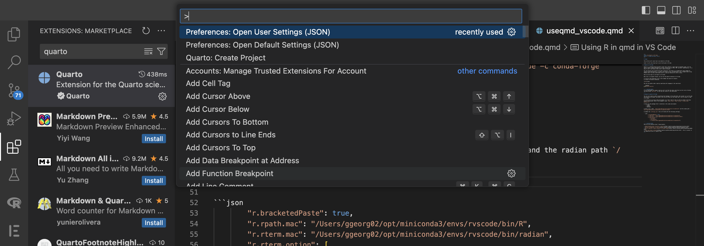

import os
os.environ['R_HOME'] = '/Users/ggeorg02/opt/miniconda3/envs/rvscodeR/bin/R'
print("Hello World")Hello WorldThis article will cover how to use Quarto in VS Code.
Later it will also show how to use R with qmd in VS Code.
If you get the following errors while running your r code block wihin qmd in VS Code, then you need to follow the steps in the document to set up R in VS Code.
Could not find R path. Please check r.term and r.path setting. qmd
Quarto is a markdown-based document format that supports a wide range of document types. You can easily render a Quarto document to various formats such as HTML, PDF, and Word. Additionally, it is easy to mix R and Python code within a Quarto document.
You can directly get started with qmd in Positron, also there is no additional setup needed for using R- qmd with positron. I tried it and found it very straighforward, but I thought about using VSCode since I am more comfortable with it, and also Positron is still in beta.
Here are the steps to use Quarto in VS Code:
Well this is straight forward, you can use the Quarto extension in VS Code.

Use can use python code in qmd by specifying the language in the code block.
import os
os.environ['R_HOME'] = '/Users/ggeorg02/opt/miniconda3/envs/rvscodeR/bin/R'
print("Hello World")Hello WorldIf you downloaded this page as qmd you will see that the above code block can be run by clicking the play button Run Cell in the top left corner of the code block.
You can use R code in qmd by specifying the language in the code block. But inorder to run the code cell and see the output, you need to set this up. Here are the steps that I did to setup R in qmd in VS Code:
I did set it up using conda environment. As I don’t want to mess up with my global R and base python installation. Here is the command I used conda create -n rvscodeR r-essentials r-base
Here are the packages that I installed in the conda environment:
conda install radianHere is my r path /Users/ggeorg02/opt/miniconda3/envs/rvscodeR/bin/R and the radian path /Users/ggeorg02/opt/miniconda3/envs/rvscodeR/bin/radian
Update the settings.json file in VS Code with the following settings:
"r.bracketedPaste": true,
"r.rpath.mac": "/Users/ggeorg02/opt/miniconda3/envs/rvscodeR/bin/R",
"r.rterm.mac": "/Users/ggeorg02/opt/miniconda3/envs/rvscodeR/bin/radian",
"r.rterm.option": [
"--no-save",
"--no-restore",
"--r-binary=/Users/ggeorg02/opt/miniconda3/envs/rvscodeR/bin/R"]Note: You can do this by the shortcut CMD + Shift + P and then type
Preferences: Open Settings (JSON)
Attaching package: 'lubridate'The following objects are masked from 'package:base':
date, intersect, setdiff, unionMake sure you install all necessary packages that are needed in the R that you are running in the conda environment (as that is what we specified in settings.json).
Preview button in the top right corner of the document (Shortcut: CMD + Shift + K).I also installed additional R packages to enable rendering during the preview. If your document doesn’t get rendered, it will show you the error in VSCode and the terminal. Most likely, it will be due to either missing R packages or not installing the necessary packages in the r.rpath.mac that you specified in the settings.json file.
Here are few resources that I found helpful: